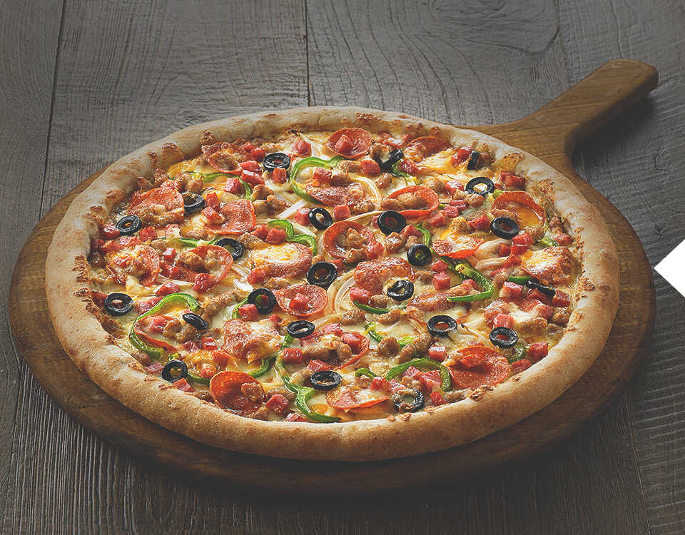
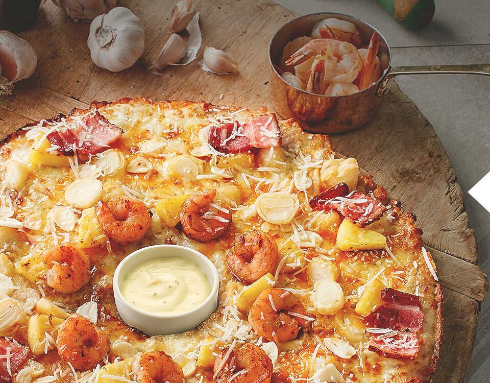

맛과 건강을 생각한
피자에땅의 탄생
피자에땅은 1996년 영등포의 작은 피자집에서 시작했습니다.작은 피자집이었던 피자에땅은 고객에게 어떻게 하면 최상의 맛과 즐거움을
제공할 수 있을까 고민했고 프리미엄 피자를 마음껏 즐길 수 있도록
가격 거품을 빼고 정직하게 서비스하자는 마음으로 출발 하였습니다.
합리적인 가격으로
날개를 달다
'맛도 두배! 즐거움도 두배!' 라는 슬로건을 바탕으로 고객들에게 2배의 만족을 줄 수 있는 1+1 마케팅을 시작했습니다.
피자에땅의 합리적인 가격정책은 고객분들의 성원으로 돌아왔고
지금까지도 1+1 마케팅은 계속되고 있습니다.

고객과 가맹점에
신뢰받는 기업
"대한민국 NO.1 피자 브랜드가 되자""고객, 점주, 임직원이 행복한 회사가 되자!"
"사랑받고 신뢰받는 가치 창조를 하자!"
피자에땅은 항상 고객과 가맹점주님을 생각하는 기본을 지키고 있습니다.
정직, 창의, 인화를 모토로 철저하고 체계화된 시스템 구축을 통해
최고의 피자를 만들고자 하는 노력을 계속하겠습니다.